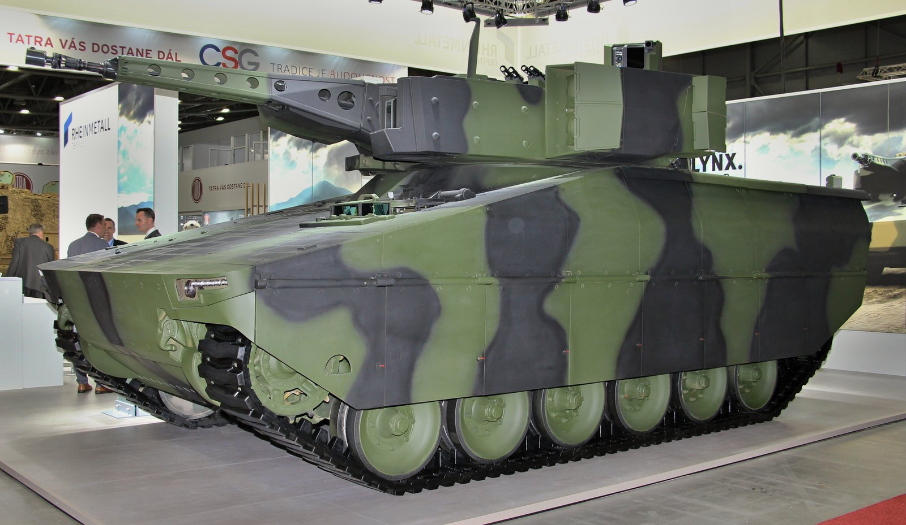

Il 16 ottobre 2026, mentre il Nasdaq cedeva il 2,1% e i chip americani affondavano, le Borse europee registravano un movimento in controtendenza: i titoli della difesa continentale volavano del 4-6%. La causa è politica: al vertice UE di Bruxelles, i leader europei hanno ribadito il sostegno all'Ucraina proprio mentre il presidente americano Donald Trump ha inasprito le critiche nei confronti di Volodymyr Zelenskyj, mettendo in dubbio la continuità del supporto militare statunitense. Il mercato ha risposto con una risposta semplice: se l'America si sfila, l'Europa si arma da sola.
I titoli della difesa europea — variazioni del 16 ottobre 2026
| Azienda | Paese | Variazione giornaliera |
|---|---|---|
| Hensoldt | Germania | +6,0% |
| Leonardo | Italia | +4,7% |
| Rheinmetall | Germania | +4,4% |
| Saab | Svezia | +3,5% |
| Thales | Francia | +2,6% |
| BAE Systems | Regno Unito | +1,8% |
| Avio | Italia | +2,4% |
Il vertice UE e il fattore Trump
Il contesto geopolitico è chiaro. A Bruxelles, i capi di governo dell'Unione Europea si sono riuniti per riaffermare il sostegno a Kiev, fornendo garanzie finanziarie e militari per il 2027. Contestualmente, Trump ha rilasciato dichiarazioni critiche nei confronti dell'Ucraina, insinuando che Washington potrebbe ridurre l'intelligence sharing (condivisione di informazioni di intelligence) e il supporto logistico.
Per i mercati, il messaggio è inequivocabile: se gli USA si ritirano parzialmente dalla protezione militare dell'Europa, i governi del continente non hanno alternativa che aumentare drasticamente i propri bilanci della difesa. Questo significa ordini per miliardi di euro a Leonardo, Rheinmetall, Thales e BAE Systems — che sono i principali produttori di sistemi d'arma europei.
Leonardo: il doppio motore italiano
Per Leonardo, la giornata del 16 ottobre 2026 accumula due catalizzatori. Sul fronte geopolitico, il riarmo europeo è strutturale: Leonardo produce l'Eurofighter Typhoon in consorzio con Airbus e BAE Systems, elicotteri militari (AW101, AW139), sistemi di comunicazione e sorveglianza per le forze NATO, e — con la divisione americana DRS — sistemi anti-drone che hanno trovato applicazione immediata nel conflitto ucraino.
Sul fronte regolamentare, il via libera della Commissione Europea all'acquisizione di Iveco Defence Vehicles (veicoli blindati terrestri, valore ~1,6 miliardi di euro) amplia la presenza di Leonardo nel settore ground forces (forze terrestri) europeo, dove oggi è meno esposta rispetto ai concorrenti tedeschi.
💡 Impara: Obiettivo NATO del 2% del PIL
I paesi NATO si sono impegnati a destinare almeno il 2% del PIL alla spesa militare. Questo obiettivo, fissato nel 2014 dopo l'annessione russa della Crimea, per anni è rimasto largamente disatteso: nel 2024, solo 11 dei 32 paesi lo rispettavano. Con la guerra in Ucraina e la pressione americana, quasi tutti i paesi UE hanno aumentato i propri budget difesa. La Germania è passata dall'1,5% al 2,3% del PIL nel 2026, con un piano da 100 miliardi di investimenti straordinari. Per Leonardo, Rheinmetall e BAE Systems, ogni punto percentuale di spesa difesa in più equivale a decine di miliardi di euro in nuovi contratti. Il 2% del PIL dei paesi NATO vale complessivamente oltre 1.300 miliardi di dollari l'anno — un mercato enorme.
Rheinmetall: dal carri armati ai droni
Rheinmetall, il colosso tedesco della difesa, guadagna il 4,4% in una seduta che di fatto conferma il suo ruolo di maggiore beneficiario del riarmo europeo. L'azienda produce il Leopard 2, il carro armato principale di dieci eserciti europei, il Lynx IFV (Infantry Fighting Vehicle, veicolo da combattimento per la fanteria) ordinato da otto paesi, e sistemi di munizioni a grande calibro in forte domanda per ricostituire i magazzini svuotati durante i rifornimenti all'Ucraina.
Hensoldt, che segna il +6%, è il campione tedesco dell'elettronica di sorveglianza e dei radar — settore in fortissima crescita con il proliferare dei droni da guerra.
💡 Impara: Defence Spending Cycle (Ciclo della Spesa per la Difesa)
A differenza del ciclo dei semiconduttori o del petrolio, il Defence Spending Cycle (ciclo della spesa militare) ha una caratteristica unica: quando un governo decide di aumentare il budget difesa, quella decisione si traduce in contratti pluriennali con visibilità garantita — tipicamente 5-10 anni. Un carro armato ordinato nel 2026 sarà consegnato nel 2028-2030. Per gli investitori, questo significa che i titoli difesa hanno un "order backlog" (portafoglio ordini) molto più prevedibile di quelli tech. Rheinmetall nel 2026 ha un order backlog di circa 40 miliardi di euro, pari a 5 anni di ricavi. Questo rende i titoli difesa più simili alle utility (aziende di servizi pubblici) che ai titoli growth: rendimenti stabili e prevedibili, anche in fasi di volatilità macro.
Il segnale strutturale per il lungo periodo
Quello del 16 ottobre non è un rally estemporaneo. Dal gennaio 2022 — quando la Russia ha invaso l'Ucraina — i titoli della difesa europea hanno sovraperformato l'indice generale in modo sistematico. Rheinmetall è salita del 680% in quattro anni. Leonardo ha quasi triplicato. BAE Systems ha più che raddoppiato. Gli analisti di Morgan Stanley e Goldman Sachs hanno alzato i target price in ottobre 2026, citando la visibilità del Capex governativo e l'impossibilità politica di tagliare i budget difesa in un contesto geopolitico così teso.
La domanda che il mercato si pone ora è se il ritiro (anche solo parziale) degli USA da obblighi NATO trasformerà l'Europa in un grande riarmo autonomo, simile a quanto accaduto in Giappone nel 2022-2023 dopo le tensioni nel Pacifico. Se così fosse, il settore difesa europeo avrebbe ancora anni di crescita strutturale davanti a sé.